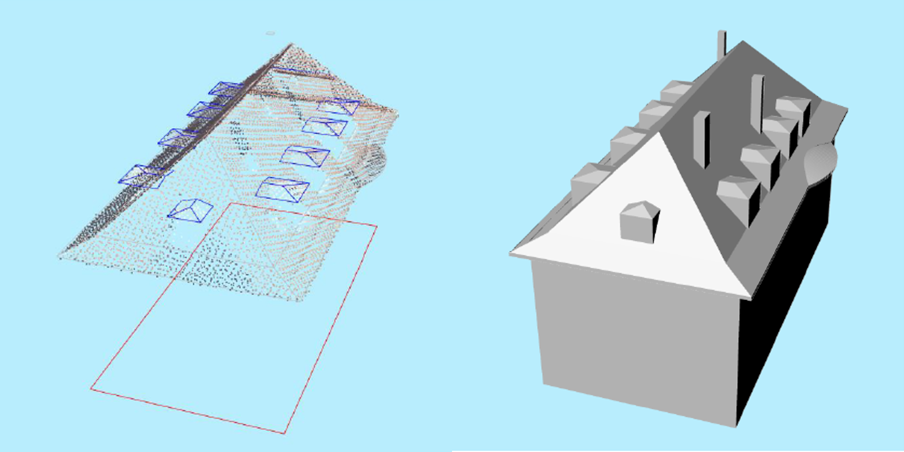
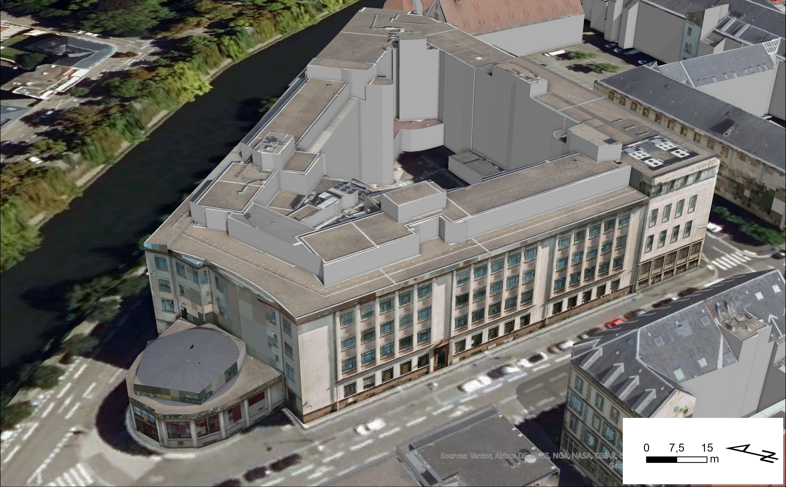
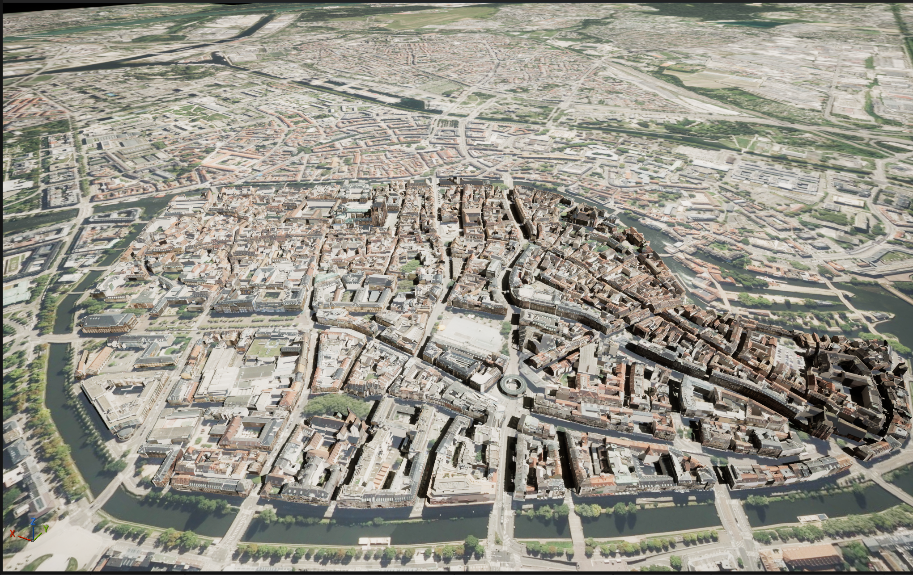
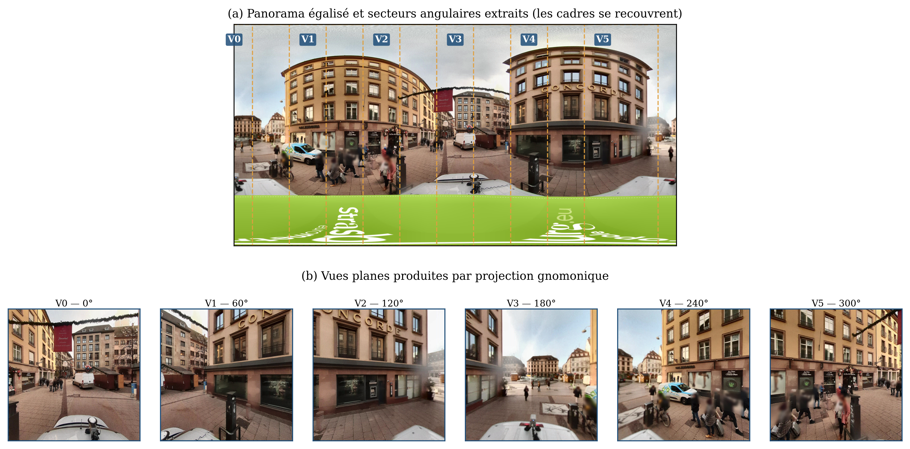
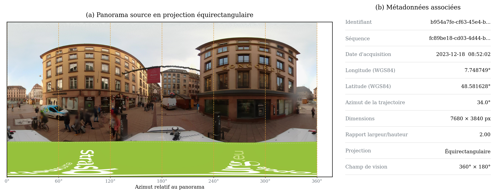
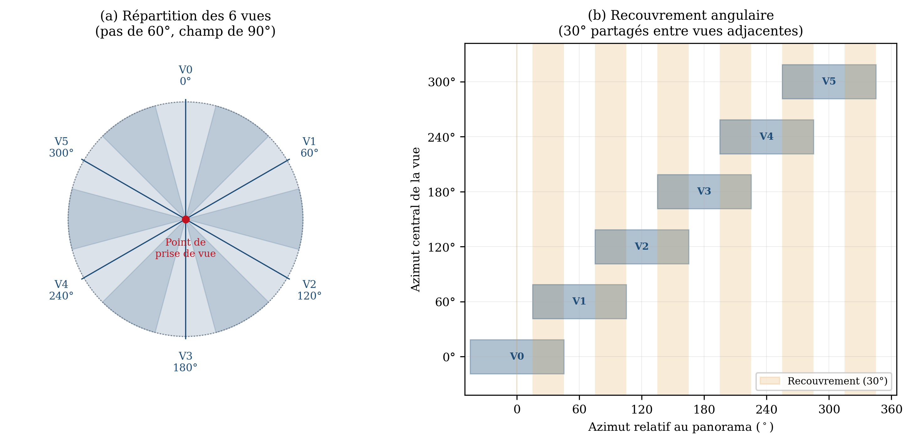
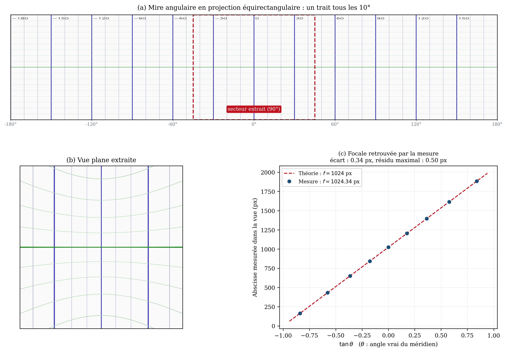
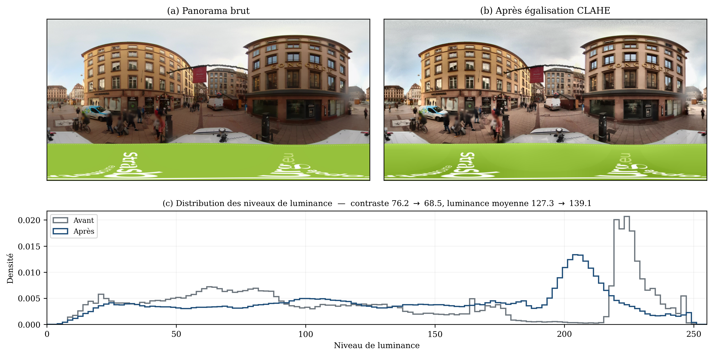
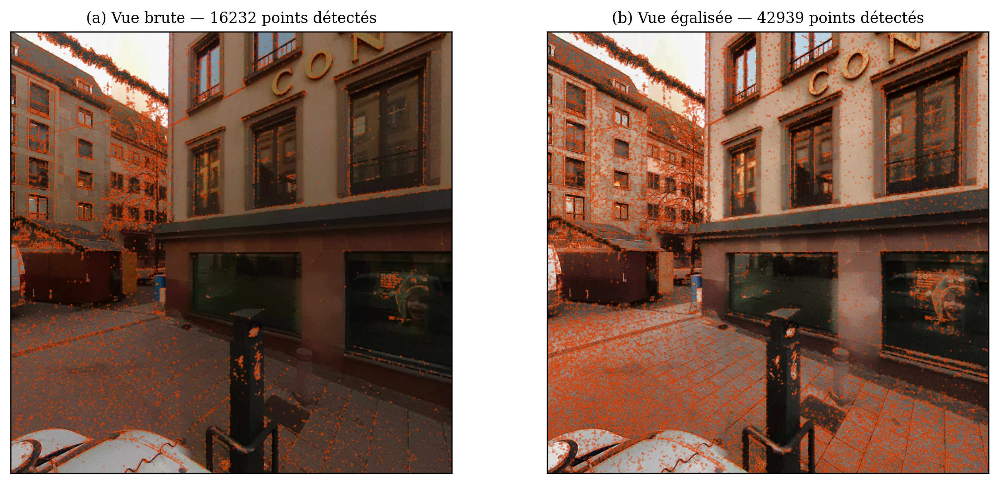

Chaîne de traitement
Segmentation par apprentissage profond
Un réseau de neurones (YOLO) détoure le bâti dans le nuage de points, puis sa lecture est hybridée avec la BD-TOPO.
Sortie : emprises au sol vérifiées

Reconstruction 3D
Un algorithme (Roofer) reconstruit les toitures en LoD2 sous un paramétrage unique, optimisé grâce à une vérité terrain.
Sortie : multipatch LoD2

Texturage hybride
Orthophotographie pour les toitures, photogrammétrie de rue recalée sur les géométries pour les façades.
Sortie : géométries texturées

Rendu temps réel
Export du paquet de scène vers Unreal Engine 5 sans perte du géoréférencement.
Sortie : environnement navigable

L'ensemble s'exécute dans ArcGIS Pro via une Python Toolbox, depuis une emprise de projet 2D jusqu'à l'export vers Unreal Engine. Seul le calcul photogrammétrique reste déporté sous RealityScan.
Étape 2 · Déplier les panoramas en vues planes
Un panorama → six vues planes
- Tous les 60°, champ de 90°
- Recouvrement de 30° entre vues voisines
- Caméra virtuelle sans distorsion
- Égalisation CLAHE : contraste rehaussé pour la détection SIFT


La chaîne de traitement dans ArcGIS Pro
Exécution de la Python Toolbox dans ArcGIS Pro : de l'emprise de projet 2D à la maquette texturée, prête pour l'export vers Unreal Engine.
Dépliage des panoramas : le détail
Panorama équirectangulaire
360° × 180° en 7 680 × 3 840 px, droites courbées. Les métadonnées (position, azimut, date) donnent l'orientation absolue des vues. Bandeau inférieur (véhicule, logo) exclu.
Six vues, 30° de recouvrement
Une vue tous les 60°, champ de 90°. Même centre optique, donc base nulle : le recouvrement fixe l'orientation relative, la profondeur vient du déplacement entre panoramas.
Du pixel à la sphère
Pixel → direction → longitude, latitude → lecture du panorama en bicubique (remappage OpenCV). Droites redressées : perspective sténopé.
Calibration exacte, vérifiée
f = (T/2) / tan(FOV/2) = 1 024 px, paramètres figés. Mire tous les 10°, loi x = f tan θ + cx : 1 024,34 px mesurés, résidu max. 0,50 px.
CLAHE sur la luminosité
Histogramme égalisé par blocs, avec écrêtage pour ne pas amplifier le bruit des zones homogènes. Les contrastes sont harmonisés d'une séquence à l'autre, couleurs préservées.
× 2,6 points SIFT
SIFT repose sur les extrema du gradient d'intensité : sur la vue égalisée, 16 232 → 42 939 points détectés, notamment sur les zones sombres (vitrines, pavés).
Limite — la calibration de la caméra d'origine est déléguée au contributeur Panoramax : un défaut d'alignement des capteurs laisse une parallaxe figée dans le panorama, impossible à compenser.






Raccourcis
- →␣
- avancer
- ←
- reculer
- molette
- défiler
- S
- plan
- F
- plein écran
- T
- chronomètre
- N
- révéler le cadre
- 0…5
- aller à une partie